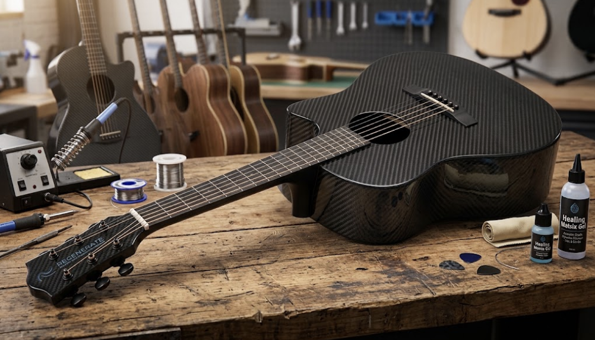

In Dr. E’s Object-Redesign Challenge, each group drew an object card and a format card and had to combine them into a new product. My group (Youqi Lian, Griffin Barr, and me) drew “piano or other musical instrument” and “hard, diamond-strong, unbreakable.” Dr. E’s example was the Infini Pen, a “bottomless” pen fed by a tube from a backpack ink reservoir.
Our redesign was the Titan Six, an unbreakable guitar that restores itself after damage. The body is made of shape memory polymer composites on a carbon fiber base, which stay rigid at room temperature for good acoustics. The strings are nitinol, a nickel-titanium shape memory alloy, so they re-tension and return to tune after being damaged. We presented the design in a short two-minute group presentation.